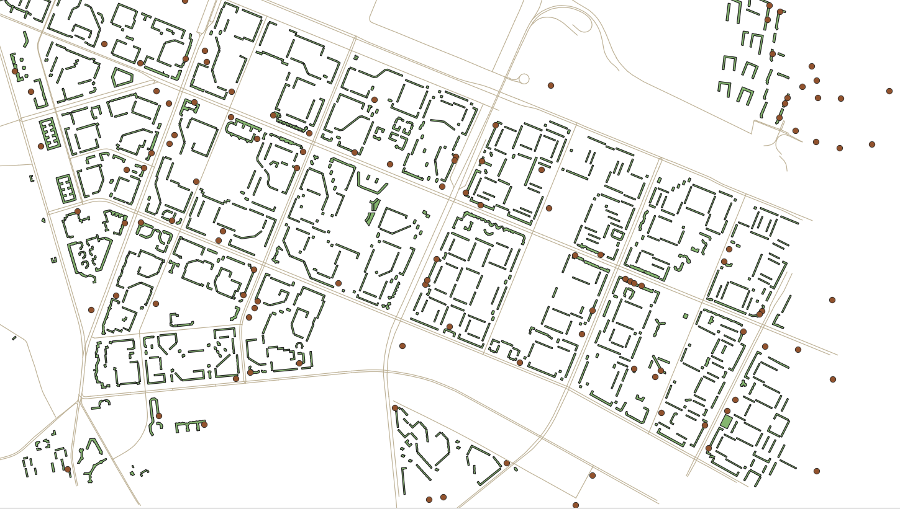

8 Векторизация
Векторизация - процесс получения векторных географических данных. Как правило, имеется ввиду процесс получения на основе исходных растровых данных (сканированные карты, информация по официальным запросам, градостроительная документация и прочее).
8.1 Создание нового слоя и добавление в него объектов
Во всех предыдущих заданиях мы использовали уже готовые слои, которые просто добавляли в проект, но мы можем создавать и отрисовывать слои самостоятельно.
Для того, чтобы создать новый векторный слой в строке меню нужно выбрать Файл - Создать слой - Создать новый Geopackage слой.

После этого появится окно, в котором нужно задать имя файла, тип геометрии, систему координат, а также структуру таблицы атрибутов.

В качестве примера рассмотрим отрисовку домов, в атрибутивной таблице будут два поля: адрес и количество проживающих.

На этом этапе вы можете не создавать конкретную структуру таблицы атрибутов, так как вы всегда можете ее отредактировать позднее. По умолчанию будет создано 1 поле fid, которое будет заполнено автоматически номерами объектов.
Рекомендую все файлы и названия полей делать латиницей, потому что QGIS может не всегда корректно работать с данными, путь к которым прописан русскими буквами, а также с русскими названиями полей.
Также следует помнить, что названия файлов и слоев, а также названия полей в атрибутивной таблице лучше делать осмысленными, чтобы вы потом могли понять, что содержится в ваших данных.
Если вы не уверены в том, какие атрибуты вам нужны, то помните, что вы всегда можете отредактировать таблицу атрибутов уже после создания слоя и отрисовки объектов.
После того, как вы создадите слой, то он появится у вас в списке слоев, но, конечно, никаких объектов на карту не добавится, потому что они пока не отрисованы.
Для начала отрисовки объектов в слое необходимо включить режим редактирования.

После включения режима редактирования на панели инструментов станут активными кнопки создания объектов и редактирования вершин  (так как у нас слой с площадными объектами, то предлагается только создания полигонов и их редактирование, если бы был другой тип геометрии инструменты были бы немного другими).
(так как у нас слой с площадными объектами, то предлагается только создания полигонов и их редактирование, если бы был другой тип геометрии инструменты были бы немного другими).
Для начала отрисовки объекта нужно щелкнуть на первую точку полигона, а потом по всем поворотным, завершается отрисовка контура щелчком правой кнопкой мыши.

По умолчанию в программе стоит настройка открывать окно ввода атрибутов для каждого созданного объекта.

В этом окне можно ввести характеристики объектов сразу, либо оставить пустым, просто нажав кнопку ОК (если вы здесь нажмете кнопку Отмена, то объект не будет создан).
Автоматическое появление формы ввода можно отключить в настройках программы.

8.2 Прилипание объектов
При отрисовке некоторых объектов важно, чтобы между ними были общие точки, общие границы, не было наложений или наоборот дырок между объектами. Для того, чтобы соблюдать эти правила, нужно пользоваться инструментами прилипания.

На панели инструментов прилипания доступны следующие функции (слева направо)

разрешить прилипание;
выбор слоев, для которых будет доступно прилипание: все слои - прилипание будет осуществляться с учетом объектов всех слоев, которые есть в проекте (даже невидимых в данный момент), активный слой - прилипание будет осуществляться только для объектов текущего слоя.

тип объектов, к которым осуществляется прилипание (может быть выбрано сразу несколько вариантов):
к вершинам - прилипание только к узловым точкам;
к линиям - прилипание к любой точке линии;
к поверхности - прилипание к любой точке внутри полигона;
к центроиду - прилипание к геометрическому центру полигона;
середина отрезка - прилипание только к середине линии;
конечные точки линии - прилипание только к начальной или конечной точке линии.

порог прилипания - то есть, в какой области вокруг курсора будет искаться объект для прилипания;
топологическое редактирование позволяет сохранять общие границы между объектами. Если эта опция включена, то программа будет автоматически перестраивать общую границу для двух объектов (если таковая граница есть);
допустимы ли наложения между объектами

разрешать прилипание к пересечениям - прилипание будет осуществляться к пересечениям двух объектов, даже если там нет вершины;
трассирование (tracing) - позволяет ускорить привязку к линейным объектам, при включении этой опции вам не нужно будет прощелкивать по всей линии, достаточно будет нескольких точек (если установаить значение отступа offset, то можно построить линию, параллельную существующей);
самоприлипание - позволяет осуществлять привязку отрисовываемого объекта к самому себе.

8.3 Редактирование объектов
8.3.1 Редактирование формы объектов
Для редактирования формы объектов следует пользоваться инструментом работы с вершинами

Также для редактирования объектов есть целый ряд функций, представленных в пункте Правка — Редактировать геометрию строки меню.


8.3.5 Преобразование объекта в кольцо

Более подробно с функциями редактирования векторных объектов можно ознакомиться в документации по ссылке